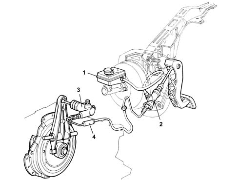

CLUTCH WITH HYDRAULIC RELEASE DEVICE
- Path
- Descriptions > 18 CLUTCH UNIT > CLUTCH WITH HYDRAULIC RELEASE DEVICE
- Kind
- system description
- Applies to
- all engines; all production periods
- Interactive page
- https://sloeber94.github.io/elrnDB-fDct/en/#/244000421
Applies to: all engines; all production periods
COMPOSITION
A hydraulic release device has been fitted to improve acoustic comfort and performance while driving. This device consists of a reservoir shared with the brake system (1), pump (2) secured to the pedal unt, slave cylinder (3) secured to the gearbox bell housing and hydraulic damper (4).
The vehicle drives more comfortably because the damping effect of the hydraulic system reduces vibrations transmitted by the power unit.
The adoption of this device eliminates the need for periodic adjustment because clearance is eliminated and any wear on the driven plate is taken up automatically.

OPERATION
The clutch is single dry plate type, with a hydraulic release device and thrust bearing in permanent contact with the pressure spring. The driven plate is driven by pressure exercised by a diaphragm spring.
The clutch is released by a pedal-operated pump that transmits the fluid pressure increase to the slave cylinder piston. The piston acts on the clutch control fork via a rod to move the thrust bearing and thus overcome the action of the diaphragm spring.
The thrust bearing is in constant contact with the diaphragm spring and the slave cylinder rod is in constant contact with the fork.
Technical Data:
- Spring load: 470 daN
- Outer diameter: 224 mm
- Inner diameter: 163 mm
- Pedal stroke: 148.5 mm